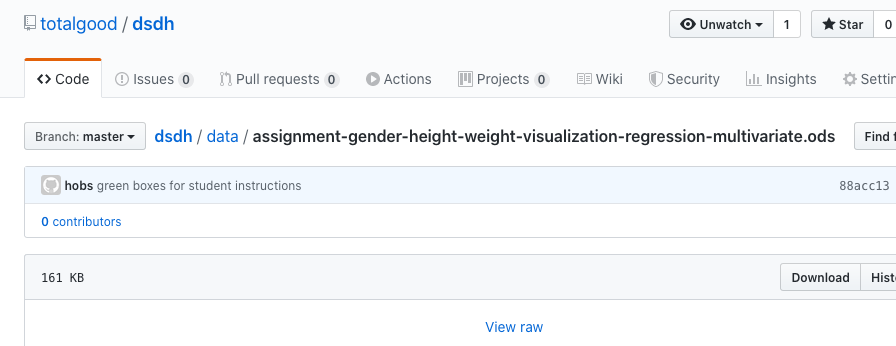

1: Assignment: Spreadsheet Linear Modeling
2: Dataset Spreadsheet: bit.ly/ucsd-spreadsheet
Image of totalgood/dsdh raw/download buttons
Dataset Columns
A: Patient ID (integer, but not usable, unique for each) B: Gender (“Male’/”Female”), text feature C: Height (in), continuous numerical feature D: Weight (lbs), continuous numerical target (regression)
4 Assignment Goals
Descriptive Statistics: Min, Max, Mean, Standard Deviation Scatter Plot Linear Regression (by manual trial and error) Multivariate Linear Regression
5: Example Descriptive Statistics and Scatter Plot
6: Example Linear Regression
6: Template for Regression
7: Example Multivariate Regression
8: Example for Multivariate Regression
9: Template for Multivariate Regression